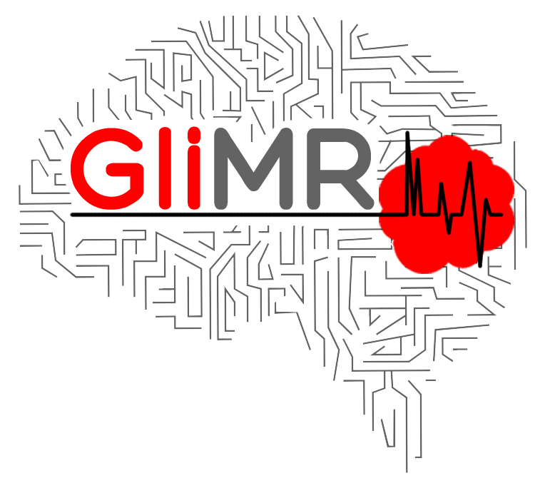
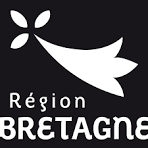
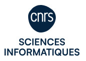

|  | EU COST Action GliMR (CA18206) "Glioma MR Imaging 2.0" (2019-2024) |
|  | Region Bretagne, Boost Europe MIND "Many pIpelines Neuroimaging Dataset" (2022) |
|  | CNRS engineer network for IA (PNRIA), F-WIN "Fouille de workflows de neuroimagerie" (2022-2023) |
| INRIA, Action for Exploratory Science GRASP (see Improving the reproducibility of results in neuroimaging) (2022-2024) |
| | Region Bretagne ARED MAPPIS "Mapping the fMRI pipeline-space towards more robust pipelines" (2021-2024) |
 | Uni. of Rennes 1 IRISA lab AI thesis (2021-2024) |
| | INRIA, Action for Technological Development Stand-im "Standardize representation of data analysis workflows in brain imaging" (2019-2021) |
| | Region Bretagne ARED VARANASI "Modéliser la variabilité analytique dans des masses d’informations en imagerie médicale" (2018-2022) |